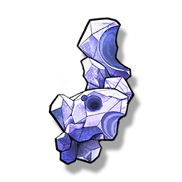

Resonators
Monsters
Weapons
Items
Standard weapon mold
Resources

Used for weapon crafting.
A special Material used for crafting, with extremely high plasticity, can be used for the manufacture of various weapons.